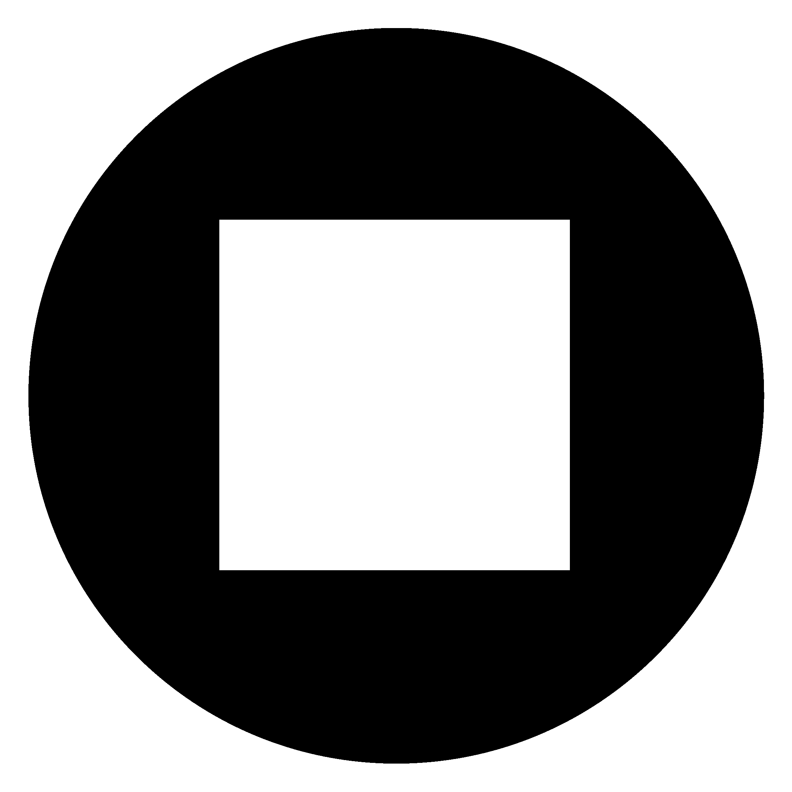
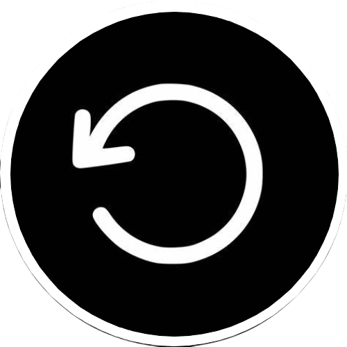
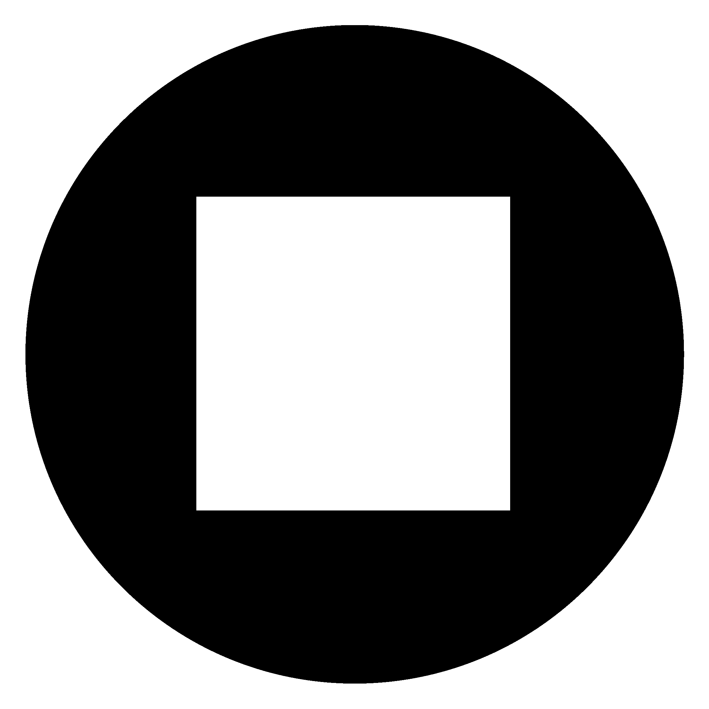
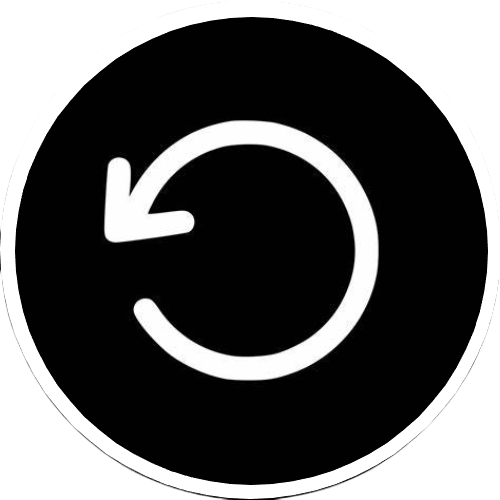

|  |  |
| Accueil | Playlist | Artists |
✨ À propos du morceauCode est une plongée immersive dans l’univers numérique de Barth. Mêlant des sonorités électroniques épurées à des touches mélodiques envoûtantes, le morceau offre une atmosphère à la fois futuriste et contemplative. Barth y propose un rythme progressif, idéal pour la concentration, le codage, ou simplement pour s’évader dans une ambiance synthwave douce et moderne. |
🎵 Présentation du son Code – Barth
|
|  |  |
Paroles :Oh na-na Yeah, ih-yeah Tu m'inspires tellement Comment ne pas parler de toi? Évidemment que tu m'inspires une belle histoire Écoute cette mélodie Elle tourne dans ma tête, ça ne s'arrête plus Toutes les nuits Tu hantes des vies Oh na-na Elle fait tomber les gars du ghetto Ils trouvent ça impressionnant Elle a le charme pour les désarmer Elle a cette chose que personne n'a Elle vient des îles Elle me fascine Oh bébé Je sais que pour t'avoir, c'est pas si facile Je vois qu'tu ne fais pas la miss Donc si j'fais tout ça, c'est pas juste pour un kiff Allons loin de tous ces vices Et profitons pleinement de tout ce bénéfice Je n'te promets pas la lune Mais j'aurai le vaisseau pour t'y emmener Avec toi dans ma bulle, je serai mieux et plus fort que jamais Croit en ma plume, car oui, elle sonne vraie Oh na-na Rien de plus vrai Elle seule peut te donner tant d'attrait, baby Elle fait tomber les gars du ghetto Ils trouvent ça impressionnant Elle a le charme pour les désarmer Elle a cette chose que personne n'a Elle vient des iles Elle me fascine Oh bébé Je sais que pour t'avoir, c'est pas si facile Donc donne-moi le code, le mot de passe pour te plaire Je prendrai soin de ton corps, de mon espace si secret Donne-moi le code, le mot de passe s'il te plait Je prendrai soin de ton corps, de mon espace si secret Oh-oh-oh, oh, oh, oh, oh, oh, oh Oh-oh-oh, oh, oh, oh, oh, oh, oh Elle fait tomber les gars du ghetto Il trouve ça impressionnant Elle a le charme pour les désarmer Elle a cette chose que personne n'a Donc donne-moi le code, le mot de passe s'il te plait Je prendrai soin de ton corps, de mon espace si secret Oh-oh-oh, oh, oh, oh, oh, oh, oh Oh-oh-oh, oh, oh, oh, oh, oh, oh Yeah |